- Deplasare stanga dreapta
- Deplasare dreapta repetata.
- Deplasare stanga repetata.
- Joc de lumini stanga dreapta dar folosind n=0x55555 apoi n=~n
- Joc de lumini deplasare simultana st dr cu explozie la mijloc;
- Joc aleator de lumini
- Folosind procedura de afisare binara afis_bin realizati un program ce utilizeaza instructiunea while pentru a afisa imaginea
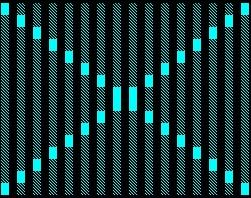
- Folosind procedura de afisare binara afis_bin realizati un program ce utilizeaza instructiunea while pentru a afisa imaginea
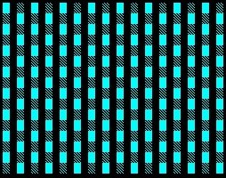
- Folosind caracterele speciale char(176) si char(219), afisati o linie cu m caractere de forma:

- Folosind caracterele speciale char(176) si char(219), afisati o suprafata cu m x n caractere de forma:

- Folosind caracterele speciale char(176) si char(219), afisati o suprafata cu m x n caractere de forma:
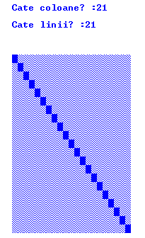
- Folosind caracterele speciale char(176) si char(219), afisati o suprafata cu m x n caractere de forma:

- Folosind caracterele speciale char(176) si char(219), afisati o suprafata cu m x n caractere de forma:
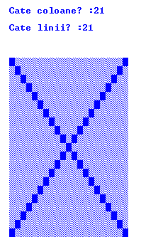
- Folosind procedura afis_bin , afisati cu o temporizare de 50 ms toate numerele 0-255 in format binar
- Folosind procedura afis_bin , simulati o deplasare stanga pe 16 biti
- Folosind procedura afis_bin , simulati o deplasare dreapta pe 16 biti
- Folosind procedura afis_bin , simulati o deplasare stanga dreapta pe 16 biti
- Folosind procedura afis_bin , simulati o deplasare simultana stanga dreapta pe 16 biti
- Folosind procedura afis_bin , simulati o deplasare simultana stanga dreapta pe 16 biti cu marcarea coliziunii la mijloc
- Folosind procedura afis_bin , simulati o deplasare o pozitie stanga dupa care o pozitie dreapta pe 16 biti
- Folosind procedura afis_bin , realizati un program care afiseaza repetitiv, in format binar numere aleatoare pe 16 biti
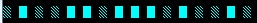
- Folosind procedura afis_bin , realizati un program care afiseaza repetitiv, in format binar 16 numere aleatoare pe 16 biti

- Folosind procedura afis_bin , realizati un program care afiseaza cifra 1 sub forma de puncte intr-o matrice 8X8

- Fara a folosi procedura afis_bin , realizati un program care afiseaza cifra 1 sub forma de puncte intr-o matrice 8X8
- Folosind procedura afis_bin , realizati un program care afiseaza cifrele de la 0 la 9 sub forma de puncte intr-o matrice 8X8
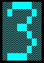
- Folosind procedura afis_bin , realizati un program care afiseaza repetitiv cifrele de la 0 la 9 sub forma de puncte intr-o matrice 8X8
- Avand o matrice binara 8X8 cu un continut prestabilit , realizati un program care creaza o matrice 16X16 folosind matricea 8X8 prin oglindirea acesteia stanga dreapta
si sus jos dupa modelul din figura de jos
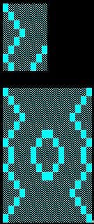
- Avand o matrice binara 8X8 cu continut aleator , realizati un program care creaza o matrice 16X16 si o afiseaza repetitiv, folosind matricea
8X8 prin oglindirea acesteia stanga dreapta si sus jos dupa modelul din figura de jos
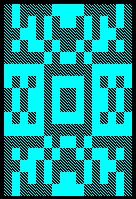
Aplicatii C#
- Avand un vector binar cu n elemente, realizati un program in C# care se afiseaza continutul, sub forma:

schimbati dinamic continutul vectorului si afisati-l
realizati un joc de lumini. - Folosind operatii binare, realizati un program in C# care simulati comanda si iluminarea unei incaperi cu 16 becuri. Comenzile se
vor lansa folosind un "Radio button";
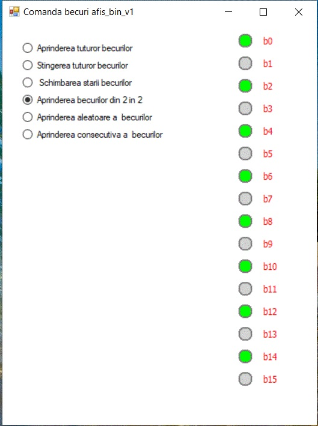
Aplicatia trebuie sa permita urmatoarele comenzi:- aprinderea tuturor becurilor
- stingere tuturor becurilor
- schimbarea starii tuturor becurilor (aprinderea tuturor becurilor stinse si stingerea tuturor becurilor aprinse)
- aprinderea becurilor din 2 in 2
- aprinderea aleatoare a becurilor
- aprinderea consecutiva a becurilor
- Folosind operatii binare, realizati un program in C# care simulati automatizarea unei sere
Aplicatia trebuie sa permita urmatoarele comenzi:- pornire/oprire caldura
- pornire/oprire ventilatie
- pornire/oprire irigare
- pornire/oprire iluminare
Aplicatia trebuie sa permita urmatoarele intrari digitale de la senzori:- temperatura excesiva
- temperatura sub limita optima
- umiditate insuficienta
- iluminare insuficienta
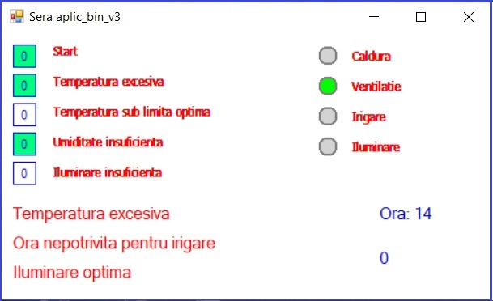
Chiar daca umiditatea este insuficienta, nu se va face irigare decat intre orele 5-11 respectiv 17-20
Iluminarea nu se va face noapea intre 21-7 - Folosind operatii binare, realizati un program in C# care simulati un tensometru
Aplicatia trebuie sa permita urmatoarele comenzi:- pornire/oprire pompa de presiune
- pornire/oprire ventil evacuare presiune
Aplicatia trebuie sa permita urmatoarele intrari digitale de la senzori:- manson montat
- puls
- start
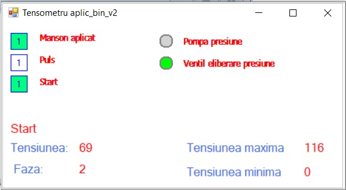